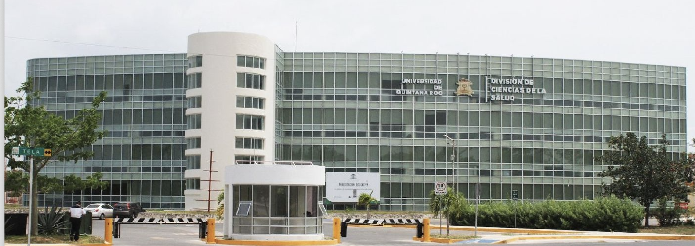
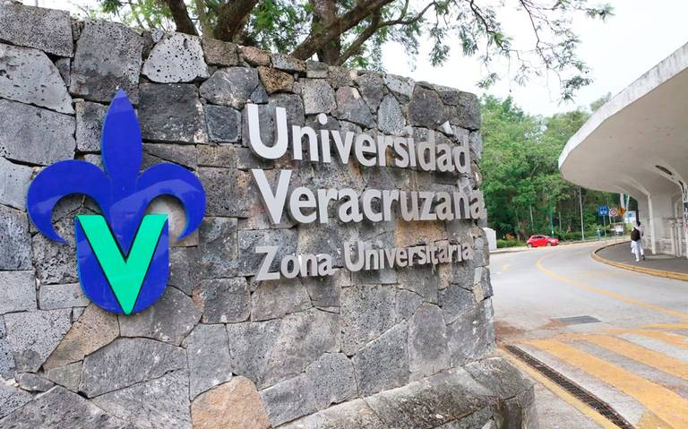

La Universidad Autónoma de Yucatán (UADY) es una institución pública de educación superior ubicada en Mérida, Yucatán. Fundada en 1922, la UADY ha jugado un papel fundamental en el desarrollo educativo y cultural de la región sureste de México.
La UADY ofrece una variada oferta académica que incluye programas de licenciatura, maestría y doctorado en áreas como ciencias sociales, ingeniería, ciencias de la salud, y humanidades. Su enfoque en la investigación y el compromiso con el desarrollo regional son aspectos clave de su misión educativa.
Además de su sólida base académica, la UADY participa activamente en la vida cultural de Yucatán. La Feria de la Lectura de Yucatán es uno de los eventos importantes que organiza, promoviendo la lectura y el acceso a la cultura en la comunidad.
Universidad de Quintana Roo (UQROO)

La Universidad de Quintana Roo (UQROO) es una universidad pública con sede en Chetumal, Quintana Roo. Fundada en 1991, la UQROO se ha convertido en un pilar importante para la educación superior en el estado, ofreciendo programas académicos que responden a las necesidades de la región.
La UQROO ofrece programas de licenciatura y posgrado en áreas como administración, turismo, ingeniería, ciencias sociales, y ciencias ambientales. La universidad se destaca por su enfoque en el desarrollo sustentable y la conservación del medio ambiente, aspectos cruciales para la región caribeña.
La UQROO también promueve una serie de actividades culturales y científicas que enriquecen la vida universitaria. El Congreso Internacional de Turismo y Desarrollo Sustentable es un ejemplo de su compromiso con la investigación y el desarrollo en temas relevantes para la región.
Universidad Veracruzana (UV)

La Universidad Veracruzana (UV) es una de las principales universidades públicas de México, con su sede principal en Xalapa, Veracruz. Fundada en 1944, la UV es conocida por su calidad académica y su influencia en el desarrollo cultural y científico del estado de Veracruz.
La UV ofrece una amplia gama de programas académicos a nivel de licenciatura y posgrado en áreas como ciencias naturales, ingeniería, ciencias sociales, artes y humanidades. Su infraestructura de investigación y su vinculación con el sector productivo son elementos clave en su misión educativa.
Además de su enfoque académico, la Universidad Veracruzana juega un papel activo en la vida cultural de Veracruz. El Festival Internacional de Cine de la UV y el Encuentro de Literatura Infantil y Juvenil son ejemplos de eventos culturales que organiza, contribuyendo al enriquecimiento cultural de la región.